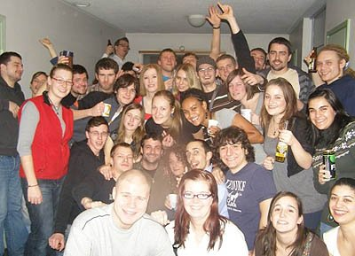
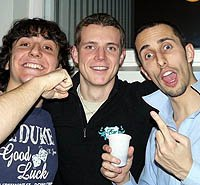

Brněnská Kometa dneska začíná své play off bitvou s Olomoucí. Ambice jsou velké a já jí přeju extraligu i z Oulu. Jen mě hrozně mrzí, že ji nemůžu vidět živě, že nemůžu na těch zápasech být… Že neuvidím ta nádherná připravená chorea, neuvidím opět 7000 lidí skákat radostí a točit šálami, neuslyším nové bojové pokřiky. Léčím se tedy alespoň na tomto videu, které se mi z těch Komeťáckých, co jsou na YouTube, líbí asi nejvíc :) . I když hokeji příliš neholdujete ...
Už to slibuji dlouho, ale stále jsem se k tomu nedostal. Kdo jsou ti lidé, které vidíte na fotkách nebo můžete spatřit na videích? Finové, Francouzi, Španělé… Je nás tady na Otokylä v bloku A asi 60, možná i víc. Pokusím se vám představit lidi, se kterými trávím nejvíce času.

Spolubydlící – Flavien, Martiño (Laura), Şafak
V jednom pokoji bydlím s Flavienem z Francie. Studuje tady na School of Business. Je fajn, ale je hodně vysazený na úklid a pořádek, tak ...
Tak jsem před časem poslouchal Záviše a narazil jsem na písničku Temelín, kterou jsem znal z posledního alba od Visáčů. Říkám si sakra, to přece není možné… Text je prakticky stejný… Přece Visáči nekradou od Záviše… A Záviš od Visáčů?
No, chtěl jsem se na to původně zeptat vás čtenářů, jestli někdo nevíte, jak to je. Ale rozřešení se nabídlo samo. Když jsem chtěl do tohoto článku dát k porovnání oba texty, zjistil jsem, že jsou stejné slovo od slova ...
Tak se mi stalo, že jsem nahrál dump databáze na localhost a ona vyhodila asi takovýto error:
There is no ‚root‘@‚%‘ registered
Jeho číselné označení si přečtěte v titulku. Pátral jsem pátral a nakonec jsem zjistil, že příčin může být více a zjistit o tom nejde skoro nic. Prima. Každopádně můj problém byl způsobený tím, že v databázi byly pohledy (VIEW) a ty mají nastaveno určité oprávnění. Je to kvůli bezpečnosti atd. – viz manuál, no každopádně když si to tam ...
V pátek jsem zorganizoval výlet do Švédska. Dověděl jsem se, že Mika má auto a občas do Švédska jede pro levné pivo, tak jsem se ho zeptal, jestli by se nedala taková cesta zorganizovat i s cestujícími, za nějaké peníze za benzín a pro řidiče. Nakonec to klaplo a v poslední lednový pátek jsme se vydali na roadtrip do Švédska. Spolucestujícími byli Miro (SK), Martin (CZ) a Filip (CZ).
Vyrazili jsme kolem osmé ráno, za tmy. Jelo se směrem na ...